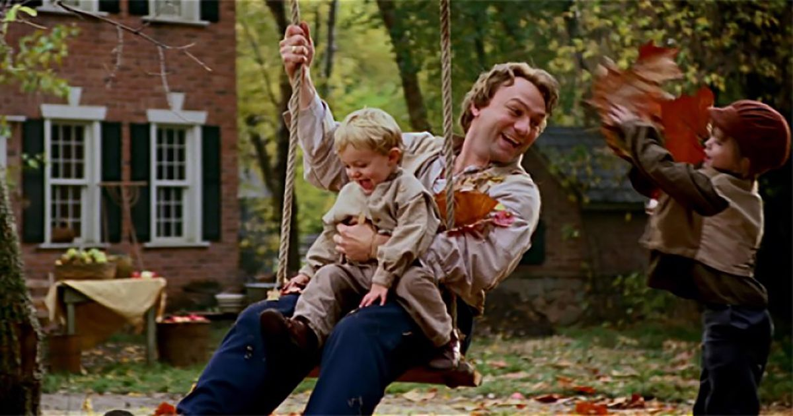
Church video
Joseph Smith: The Prophet of the Restoration
The Church of Jesus Christ of Latter-day Saints
Study Jesus Christ · Joseph Smith
Explore Joseph Smith’s life through faith, family and the work of the Restoration.
Begin with his accounts of the First Vision and the Book of Mormon, then spend time with Joseph, Emma and their families through pictures, scriptures and historical accounts.
ContinueJoseph Smith (1805-1844) was the founding prophet of The Church of Jesus Christ of Latter-day Saints. Latter-day Saints believe God called him to help restore the gospel and Church of Jesus Christ in the latter days.
Stand Forever · Third foundational question
Joseph Smith reported visions, brought forth the Book of Mormon, organized the Church in 1830, and taught doctrines that continue to shape Latter-day Saint faith. His prophetic claim can be examined through his firsthand accounts, contemporary records, the texts he presented as scripture, and the lasting fruits of his ministry.
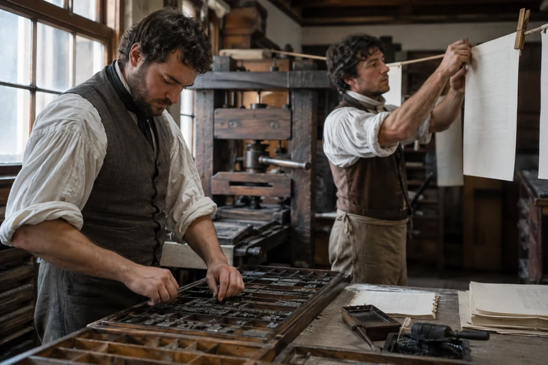
Explore and study
Two printers set type and prepare pages by hand for the Book of Mormon's 1830 publication. The press, ink and stacked paper reveal the patience and skilled labor required to place the finished book into a reader's hands.
Book of Mormon introductionWatch and study
The film Joseph Smith: The Prophet of the Restoration offers a dramatic introduction to his life and legacy. Begin your examination with his reported First Vision. Watch with a source question in mind: what can you identify in the written accounts, and what belongs to a filmmaker's portrayal?

Church video
The Church of Jesus Christ of Latter-day Saints
The Church's First Vision Accounts essay identifies four firsthand accounts. Its discussion of the 1832 account emphasizes Joseph's concern for forgiveness and personal redemption. The 1838 account places the vision within the beginnings of the Church and emphasizes his question about which church to join.
These are different dates of recording, not four dates for the event. Begin with one account, noting its audience and emphasis. Then compare a second. The essay presents the Church's explanation of differences and links to documents so that you can examine more than a modern summary.
Joseph Smith grew up during intense religious revival in the northeastern United States. As a teenager, he sought divine guidance about which church to join. He later recorded that in answer to prayer he saw God the Father and Jesus Christ. Latter-day Saints call this experience the First Vision and regard it as the beginning of the Restoration.
Bring your own questions to the Savior’s words. Explore a study of reading scripture together.
Joseph said an angel named Moroni later directed him to an ancient record written on metal plates. He translated the record by the gift and power of God, and it was published in 1830 as the Book of Mormon. The book presents itself as another testament of Jesus Christ.
Latter-day Saints believe priesthood authority, gospel ordinances, prophetic revelation, and the organization of Christ’s Church were restored through Joseph Smith. The Church was formally organized in 1830. Joseph served as its first president and received revelations that now form a substantial portion of the Doctrine and Covenants.
Latter-day Saints honor Joseph as a prophet, but worship God the Father in the name of Jesus Christ. Joseph’s prophetic role is meaningful to believers because they understand his mission as pointing people to Jesus Christ, restoring priesthood authority, and bringing forth scripture that testifies of Christ.

Joseph Smith and Sidney Rigdon testify of the living Son of God. Read their witness from the 1832 vision.
Doctrine and Covenants 76:19–24
Read “We saw Him” in Jesus Christ in the Restoration and Today →Joseph Smith’s life included religious leadership, migration, conflict, legal controversy, political activity, plural marriage, and violence directed both toward and around the early Saints. A responsible study should not reduce him to either a flawless hero or a caricature. The Church’s history resources include primary-source context and essays for difficult questions as well as devotional accounts.
You can examine one question at a time. Begin with the linked accounts, notice when and why each was written, and distinguish what the record says from later interpretation. If you are discussing the question with someone else, make room for what it means to them as well as the evidence. You do not need to rush past a concern to keep learning.
The Church's First Vision Accounts essay discusses differences among the accounts and explains the Church's interpretation of them. Its notes provide a path to the underlying records. Read an account before its commentary when you can, and distinguish Joseph's reported experience from a historian's explanation of the record.
A devotional account and a historical essay may serve different purposes. Asking when a text was written, who preserved it, and what evidence is available is a reasonable part of study. You can hold a specific question open while examining it carefully.
Joseph Smith History 1:5-20 recounts religious disagreement, Joseph's reading and prayer, and his reported vision. Record the questions he describes and the response he says he received. This is the scriptural account accepted by Latter-day Saints; identifying it as an account is important when studying history.
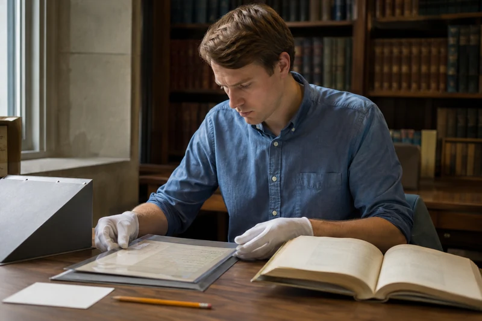
Explore and study
A reader leans over Joseph Smith's written account with another book open beside it. Beginning with his own words lets the record speak before we decide what his life and testimony mean.
Use the First Vision Accounts essay linked above to reach the other records. Compare emphasis, wording, audience, and date of recording. The date an event is said to have occurred and the date a surviving account was written are different facts. The essay offers the Church's interpretation of differences; the underlying documents allow you to examine the evidence yourself.
A historical investigation can ask what records survive and how they relate. A spiritual inquiry may ask what the Restoration claim means for belief and practice. Those inquiries can inform each other, but one should not silently stand in for the other. If a concern remains, name it specifically and pursue the relevant evidence.
Write the title, author or recorder, date of the record, and exact passage you are considering. Add a separate sentence for your interpretation. This keeps a later retelling from becoming indistinguishable from the original evidence.
Watch and study
Explore and study
A handwritten record lies open beside an inkwell on a nineteenth-century desk. Preserved across time, Joseph Smith's accounts let readers follow how he described his search for God in his own words.
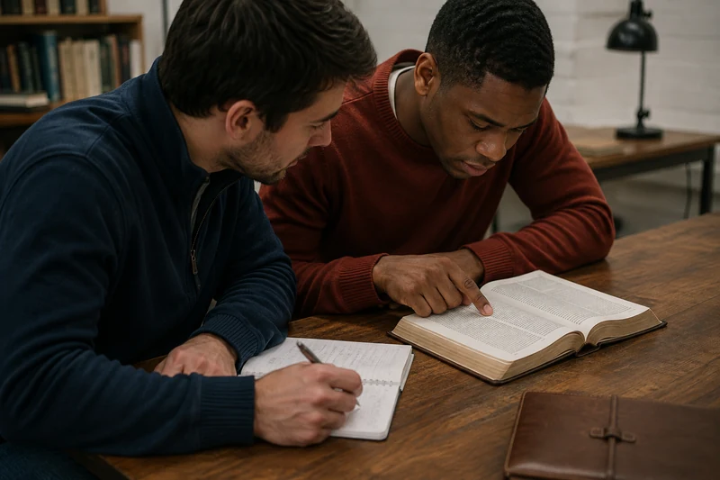
Explore and study
Two readers place the revelation beside their notes, tracing the shared labor, uncertainty and reassurance surrounding Oliver Cowdery's work with Joseph Smith.
In his October 2014 address Joseph Smith, Elder Neil L. Andersen discusses the Restoration and invites a personal witness through prayer and scripture. Compare his statement of faith with a revelation from the work surrounding the Book of Mormon. Read the heading to Doctrine and Covenants 6 as historical context. It identifies Harmony, Pennsylvania, April 1829, and Oliver Cowdery's work as a scribe beginning April 7.
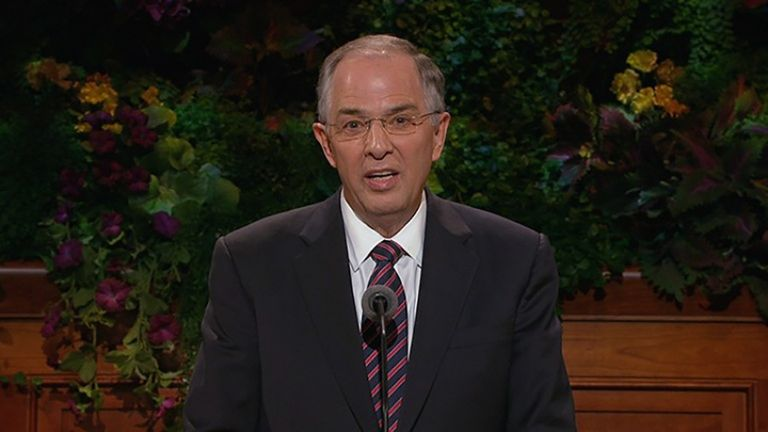
Verses 18-20 combine support with accountability. Oliver is asked to stand by Joseph in difficulty, and the two are to give and receive correction. Patience, faith, hope, and charity belong within that relationship. This is a useful passage to keep beside a history of religious leadership because the text itself makes room for faults and growth.
In verses 21-23 the speaker identifies Himself as Jesus Christ and recalls peace given to Oliver. In verses 36-37 attention turns again to Christ and His wounds. Consider how the revelation directs a participant in the Restoration toward the Savior. Continue that connection in the full D&C 6:36 study.
Faith in daily life
Meet Joseph, Emma and Hyrum through moments of work, love and faith.
Lucy Mack Smith told her family’s story in 1844 and 1845, looking back across decades of work, illness, faith and loss. Let us follow ten of the moments she remembered, and meet the people whose love helped sustain Joseph.
1812–1813
A fever swept through the Smith household in Lebanon, New Hampshire. As Sophronia grew dangerously weak, Lucy and Joseph Sr. knelt beside her bed and prayed. Lucy remembered gathering her daughter into her arms and watching anxiously as her breathing returned.
Their faith took the form of staying close. Before we meet Joseph as a preacher or translator, we meet a family learning to carry fear together and to turn toward God while caring for one another.

Lucy and Joseph Sr. pray beside Sophronia during the illness that swept through their household in Lebanon.
Lucy Mack Smith’s historyLucy remembers Sophronia’s recovery
1813
During Joseph’s long illness, Hyrum offered to take his exhausted mother’s place beside the bed. Lucy remembered him holding Joseph’s painful leg for hours, trying to ease his younger brother’s suffering.
Joseph was about seven; Hyrum was twelve or thirteen. The devotion we later see between these brothers began in the ordinary courage of a child who would not leave his brother alone.

Hyrum keeps watch beside Joseph, taking his weary mother’s place and trying to ease his brother’s pain.
1816
Before Lucy followed her husband to Palmyra, she said farewell to her mother, Lydia Gates Mack. Lydia encouraged her daughter to remain faithful and spoke of the hope that they would meet again beyond this life.
The move carried more than household belongings westward. Lucy took with her a mother’s counsel and a hope in God that would become part of the spiritual life of her own children.

Before leaving for Palmyra, Lucy says farewell to her mother. Lydia’s counsel carried the hope that faith and family bonds would reach beyond this life.
Autumn 1823
Lucy remembered the family drawing together in the evenings to listen as Joseph spoke about what he had learned. Parents, older siblings and younger children shared the room and gave their attention to him.
These conversations belonged to family life before the Church was organized. Listening, asking and returning to the conversation together helped them face changes whose full meaning they could not yet see.

The Smith family gathers to listen to Joseph. Lucy remembered evenings when parents and children shared these conversations.
November 1823
As Alvin approached death, he spoke to his brothers and sisters about the responsibilities they would carry after him. He asked Hyrum to finish the house for their parents, encouraged Sophronia to be kind to them, and urged Joseph to remain faithful and set a good example for the younger children.
Alvin died on 19 November 1823, at twenty-five. His counsel joined faith to practical duties: finish the work, care for your parents and help those who are younger than you.

Hyrum listens beside Alvin’s bed. Alvin asked his family to care for their parents, finish the work before them and remain faithful.
21–22 September 1827
After Joseph asked about a chest with a lock and left with Emma, Lucy waited through the night in prayer. Morning brought the familiar work of preparing breakfast, but her thoughts remained with her son.
Her account lets us pause with the mother who waited while the events of the Restoration unfolded beyond her sight. Prayer and daily work stood beside one another in her care for Joseph.

Lucy waits in prayer through the night after Joseph and Emma leave, carrying her concern for her son into the morning’s work.
Late September 1827
When Don Carlos brought the message that Joseph needed a chest, Hyrum emptied one and carried it to him. Lucy’s history gives this practical act a place in the story of protecting the plates.
We can see Hyrum’s loyalty in the weight he was willing to carry. He responded to his brother’s need with something useful, and he went without delay.

Hyrum emptied a chest and carried it to Joseph after Don Carlos brought word that it was needed.
Summer 1828
After Martin Harris reported the manuscript missing, Joseph was overwhelmed with grief. Lucy tried to comfort him with the hope that repentance could bring forgiveness.
She did not make the loss small. She helped her son look beyond despair toward God’s mercy. In this moment, the family story invites us to consider how we speak to someone who knows that a serious mistake has been made.

After the manuscript loss, Lucy offers Joseph the hope that repentance can bring forgiveness.
6 April 1830
Lucy remembered Joseph’s tears of joy after his father was baptized. He leaned against his father and wept, grateful to see him take this step of faith.
The Restoration was also a family’s religious journey. For Joseph, this was a moment to hold his father close and rejoice in a commitment to Jesus Christ.

Joseph holds his father close after his baptism on 6 April 1830. Lucy remembered her son’s tears of joy.
Winter 1840–1841
After Joseph Sr.’s death, Lucy injured her knee and became ill. She remembered weeks in which family members kept watch through the nights, and she named the devoted care of Sophronia, Arthur Millikin and her youngest daughter, Lucy.
The mother who had watched beside sick children now received their care. Here the family story brings us back to the love that crosses generations, and to Lucy’s gratitude for the people who stayed near through a difficult season.

The care Lucy once gave her children returns to her. Her family kept watch and helped her through illness after her husband’s death.
Before they made a home together, Joseph and Emma belonged to two large families. Their parents, brothers and sisters shaped the places and relationships from which their married life began. Their own children brought both joy and deep sorrow.
Follow the two families separately, then the children Joseph and Emma raised and remembered. Each name belongs to a different lifetime; these records let us hold those lives together without losing their dates.
Joseph Smith Sr. (12 July 1771–14 September 1840) and Lucy Mack Smith (8 July 1775–14 May 1856) married on 24 January 1796. Their eleven children included Joseph, his older brother Hyrum, and two sons who died in infancy.
The names also reveal how closely loss touched this family. Alvin died in 1823. Don Carlos died in 1841. Joseph and Hyrum died on the same day in June 1844, and Samuel died the following month. Their mother, Lucy Mack Smith, lived until 1856.
| Child | Life dates |
|---|---|
| Unnamed son | Born about 1796; died about 1796 |
| Alvin Smith | 11 February 1798–19 November 1823 |
| Hyrum Smith | 9 February 1800–27 June 1844 |
| Sophronia Smith | 16 May 1803–22 July 1876 |
| Joseph Smith | 23 December 1805–27 June 1844 |
| Samuel Harrison Smith | 13 March 1808–30 July 1844 |
| Ephraim Smith | 13 March 1810–24 March 1810 |
| William Smith | 13 March 1811–13 November 1893 |
| Katharine Smith | 28 July 1813–2 February 1900 |
| Don Carlos Smith | 25 March 1816–7 August 1841 |
| Lucy Smith | 18 July 1821–9 December 1882 |
Explore the Smith family records and source notes
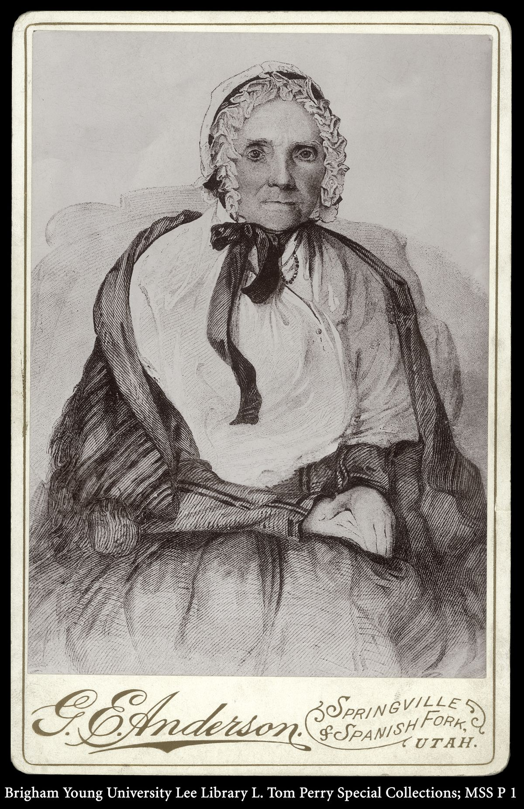
Lucy Mack Smith in a photographic copy of a drawing, catalogued around 1890–1920. Courtesy of L. Tom Perry Special Collections, Harold B. Lee Library, Brigham Young University.
Isaac Hale (21 March 1763–11 January 1839) and Elizabeth Lewis Hale (19 November 1767–16 February 1842) married on 20 September 1790. Emma was the seventh of their nine children.
Their home stood in Pennsylvania’s Susquehanna Valley. Emma’s childhood began in the family’s log home; the later frame house was built around 1809. When Joseph and Emma moved to Harmony in 1827, they returned to the region and relationships she had known growing up.
| Child | Birth date |
|---|---|
| Jesse Hale | 24 February 1792 |
| David Hale | 6 March 1794 |
| Alva Hale | 29 November 1795 |
| Phebe Hale | 1 May 1798 |
| Elizabeth Hale | 14 February 1800 |
| Isaac Ward Hale | 11 March 1802 |
| Emma Hale | 10 July 1804 |
| Tryal Hale | 21 November 1806 |
| Reuben Hale | 18 September 1810 |
Emma died on 30 April 1879.
Read about Isaac HaleRead about Elizabeth Lewis HaleRead the Hale family historyExplore Emma’s Susquehanna home
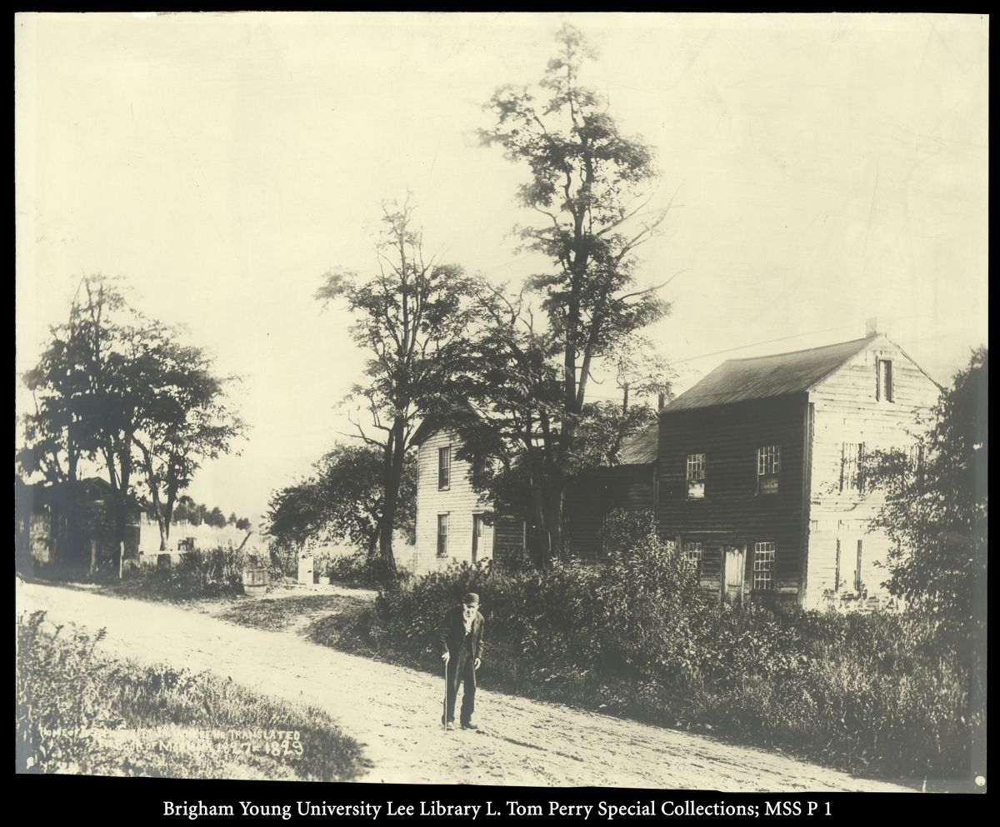
The Hale home in a photograph catalogued around 1897–1899, long after Emma’s childhood there. Courtesy of L. Tom Perry Special Collections, Harold B. Lee Library, Brigham Young University.
Joseph and Emma’s family included nine children born to Emma and the two Murdock twins they adopted. In 1831, Emma’s newborn twins died. John Murdock’s wife, Julia Clapp, died after giving birth to twins that same day; Joseph and Emma welcomed those children, Julia and Joseph, into their home.
Several of their children died very young. Julia, Joseph III, Frederick, Alexander and David Hyrum lived into adulthood. David was born in November 1844, after his father’s death. Their family story therefore continues beyond the years Joseph and Emma shared.
| Child | Life dates |
|---|---|
| Unnamed son, later called Alvin | 15 June 1828; did not survive birth |
| Unnamed daughter, later called Louisa | 30 April 1831; lived three hours |
| Unnamed son, later called Thadeus | 30 April 1831; lived three hours |
| Julia M. Smith, adopted Murdock twin | 30 April 1831–12 September 1880 |
| Joseph Murdock Smith, adopted twin | 30 April 1831–29 March 1832 |
| Joseph Smith III | 6 November 1832–10 December 1914 |
| Frederick Granger Williams Smith | 20 June 1836–13 April 1862 |
| Alexander Hale Smith | 2 June 1838–12 August 1909 |
| Don Carlos Smith | 13 June 1840–15 August 1841 |
| Unnamed son | 6 February 1842; did not survive birth |
| David Hyrum Smith | 17 November 1844–29 August 1904 |
The familiar names Alvin, Louisa and Thadeus were added to the family Bible later by another hand. Joseph and Emma did not record names for the 1831 twins, and Emma later described them as unnamed. Joseph’s son Don Carlos is distinct from his younger brother of the same name.
Read the children’s records and naming notesRead Joseph and Emma’s family history
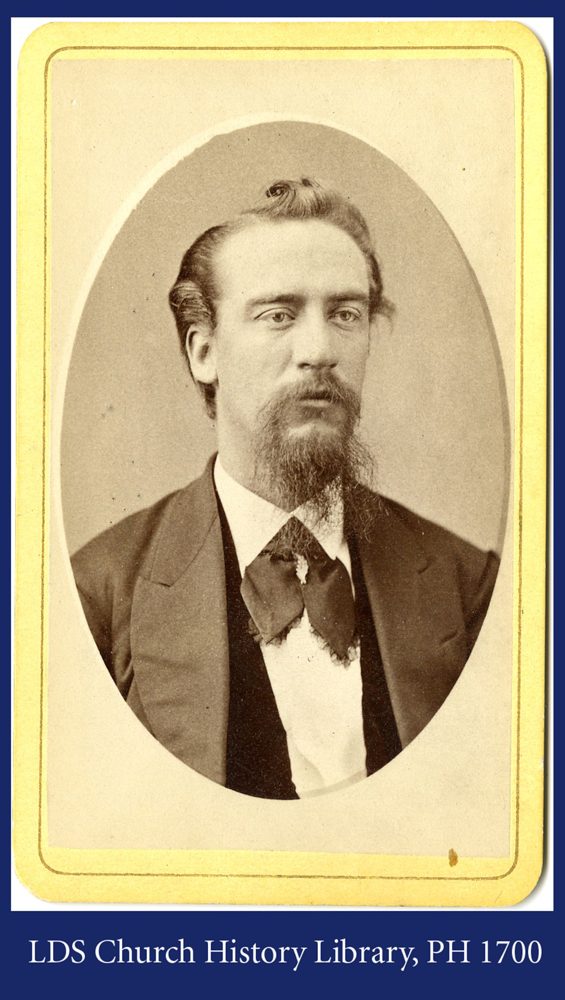
David Hyrum Smith as a young adult, photographed around 1870 by Charles R. Savage. Born after his father’s death, David belongs to the next chapter of the family’s story. Courtesy of Church History Collections, The Church of Jesus Christ of Latter-day Saints and Intellectual Reserves, Inc.
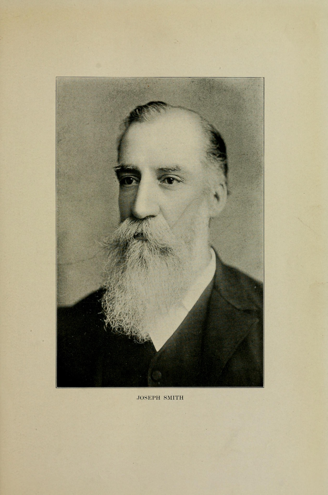
Joseph Smith III in later life, reproduced in the 1915 History of Decatur County, Iowa, and Its People. Born in 1832, he was eleven when his father died.
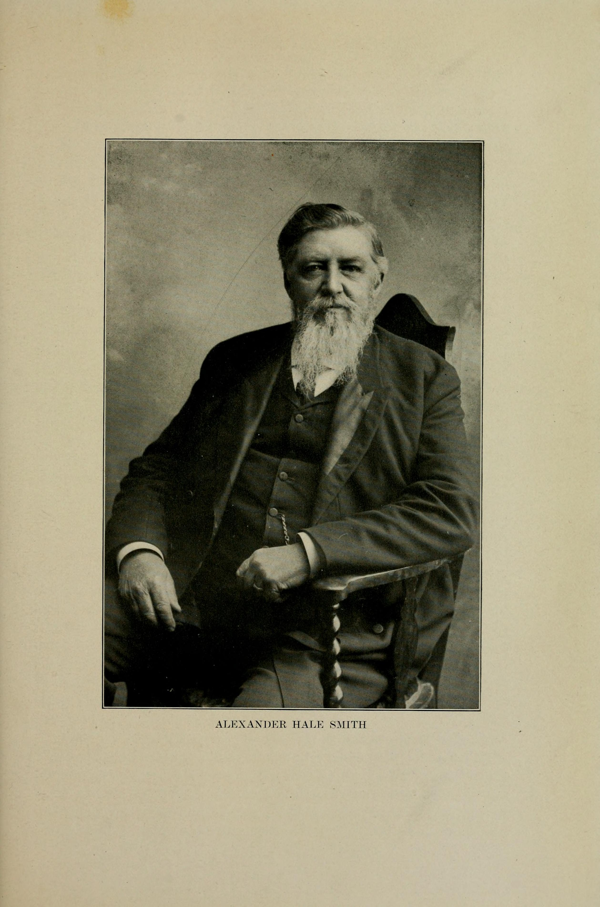
Alexander Hale Smith in later life, reproduced in the 1915 History of Decatur County, Iowa, and Its People. Born in June 1838, he was six when his father died.
18 January 1827 · Joseph 21, Emma 22
Joseph and Emma married in South Bainbridge, New York, despite opposition from Emma’s family, then moved to his parents’ home. Their partnership began before the translation and publication of the Book of Mormon.

Joined hands express the partnership Joseph and Emma began in January 1827.
Consider: What does it mean to begin a shared life without knowing all it will require?
Early December 1827 · Joseph 21, Emma 23
Joseph and Emma arrived in Pennsylvania’s Susquehanna Valley in early December 1827. They moved toward Emma’s family while seeking a place to live, work and continue the translation. Historical accounts also credit her brother Alva with helping the move.
Emma was expecting their first child when they arrived in Pennsylvania.

Joseph and Emma travel toward their new home in Harmony and the work ahead of them.
Read the research on their moveExplore the history of their home
Consider: What help makes a difficult move or new beginning possible?
Harmony · early 1828
Emma helped Joseph as an early scribe. Martin Harris took over that role in April 1828. Her writing belongs within the history of the translation, as well as the history of their marriage.
Emma was expecting their first child during this early scribal work.

Emma’s attentive writing brings her early contribution to the Book of Mormon translation into view. She was expecting their first child.
Read the official account of Emma’s early workRead the Church Historian’s Press introduction
Consider: Whose quiet work helps make a larger undertaking possible?
Harmony · June 1828
Their first child died shortly after his birth on 15 June 1828. Emma became seriously ill, and Joseph cared for her through the following two weeks.

Joseph’s presence beside Emma expresses the tenderness of care after their child’s death and her serious illness.
Consider: How can steady presence help when words cannot remove another person’s grief?
Harmony · autumn 1828
Joseph supported the household through hired farm labor, including hauling wood. The ledger places this work alongside the demands of translation and family life.

Carrying wood places Joseph’s physical work alongside his responsibilities to family and faith.
Consider: How can necessary everyday work become an expression of love?
Harmony · December 4, 1828
Joseph earned three dollars for four days of work and spent twenty-five cents on a comb for Emma. A modest purchase brings their household concerns into view.

A small gift makes Joseph’s care for Emma tangible amid the demands of earning a living.
Read the history of their homeExamine the ledger research and transcription
Consider: Which small act of thoughtfulness could express care in your home?
Late June 1830 · Emma 25
Emma was baptized on 28 June 1830, but Joseph’s arrest disrupted the planned confirmation meeting. While he faced custody and court proceedings, she joined other women in prayer. Their shared worship offered a way to turn toward God amid anxiety.

Emma joins another woman in prayer while Joseph is in custody.
Consider: Who could you join in prayer when someone is facing uncertainty?
November 1838 · Emma 34
On 12 November 1838, Joseph wrote to Emma while held in Richmond, Missouri. He expressed affection for her, addressed their children, and hoped for their reunion. His invitation to visit left room for Emma’s own judgment. The letter makes the family’s separation personal.
Their youngest living child, Alexander, had been born that June. Concern for the children formed part of the separation these letters sought to bridge.

Joseph’s November 1838 letter carries affection and concern across the family’s separation.
Read Joseph’s letter and its historyRead his invitation to EmmaRead the family history
Consider: What can a thoughtful letter offer someone you cannot be with?
Nauvoo · 17 March 1842
At the first meeting of the Female Relief Society of Nauvoo, Emma was elected president. After the men withdrew, she urged the women to find and relieve people in distress, do good, and care for one another’s character and reputation.
She undertook this service about six weeks after giving birth to a son who did not survive.

Emma turns concern for others into a call to act. She urged the women to seek out people in distress after the men withdrew.
Consider: Who nearby needs to be noticed, treated fairly, or helped?
Joseph and Hyrum
Joseph and Hyrum shared the work and trials of the Restoration. Their relationship also belonged to the daily life of a family: two brothers whose affection and loyalty endured through difficulty.

Joseph rests an arm around Hyrum’s shoulders, and the brothers smile at each other.
Consider: How can affection and loyalty strengthen the relationships closest to you?
June 1844 · Hyrum 44
Doctrine and Covenants 135 remembers Hyrum reading near the close of Ether 12 on the morning he prepared to leave for Carthage. He marked the passage by turning down the page. Its words of charity, faithfulness and strength in weakness place his final journey within his devotion to Jesus Christ.

Hyrum’s quiet pause invites reflection on the scripture he read before leaving for Carthage.
Consider: What passage of scripture helps you remain faithful when the way ahead is uncertain?
In July 1840, William W. Phelps sought reconciliation after his break with the Church. Joseph’s reply welcomed his return and expressed joy in renewed friendship.
After Joseph and Hyrum were killed, Phelps’s poem, now known as “Praise to the Man,” appeared in the Times and Seasons on 1 August 1844. It joined remembrance of Joseph’s ministry with hope in his work beyond death.
Read Joseph’s letter to Phelps, 22 July 1840Read the history of mourning and remembranceRead or listen to the official hymn
Consider: How can remembrance move us toward mercy, gratitude and greater faithfulness to Jesus Christ?
These focusChrist prompts are invitations for personal reflection.
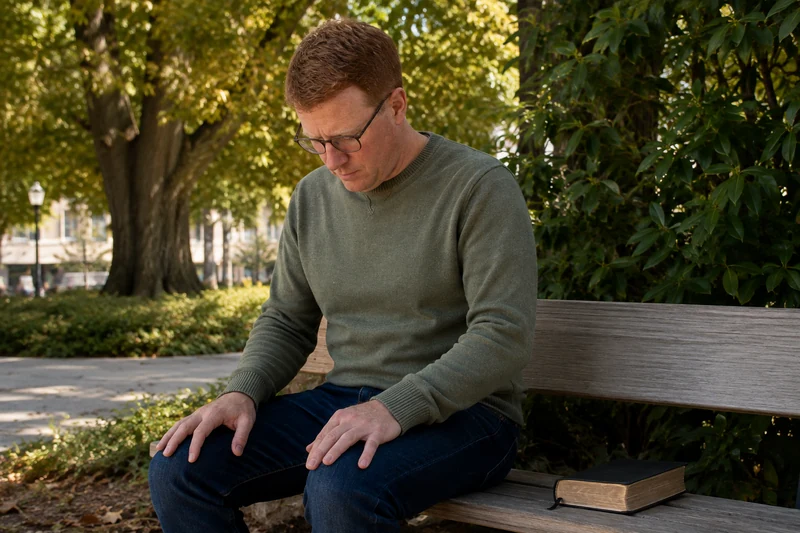
Explore and study
A man bows his head beside a closed book on a quiet park bench, giving prayer and careful study room to work together as he seeks understanding.
Choose a single question about Joseph's life. Write it in language that a source could help answer: what did he report, when was it recorded, or how did a particular teaching develop? Avoid making one question stand for his entire life.
Open a document linked from the First Vision essay. Read the surrounding passage. Note the recorder, recording date, and what the document actually says. If your question concerns a different period, use the Church History section to find the relevant sources.
Write a short account of what you learned, separating evidence from your explanation of it. Name any remaining uncertainty. A source can establish what a witness reported without resolving every question about the experience being described.
Read D&C 6 with the historical questions still clearly named. What does its invitation to seek wisdom, accept correction, and look to Christ mean for your own conduct? Personal reflection can accompany careful investigation without replacing it.
Bring a passage and a specific question to Ask, then check the response against the linked original sources.
Joseph Smith—History 1:11–13 describes Joseph reading James and considering what to do with his question. These reflections connect the source work on this page with your own honest inquiry.
Write it in one sentence. Is it about a reported event, the meaning of a teaching, or your own response to a prophetic claim? Identify the kind of source that could help you, then return to one of the records linked above.

Joseph’s counsel from Liberty Jail teaches persuasion, gentleness and love. As you discuss questions about his life, consider how those teachings can guide the conversation.
Doctrine and Covenants 121:41–44
Read “Listening with patience” in Jesus Christ in the Restoration and Today →Compare your first impression with what the source actually says. Which detail became clearer? What remains uncertain? Record the author and date so that the next conversation begins with evidence you can find again.
Consider the spiritual claim after giving the historical question its proper attention. What would you like to ask God, and what are you willing to continue studying? An honest prayer can include both gratitude and unresolved questions.
From a sincere question to faithful action. Continue with Joseph’s early scripture study and Elder Andersen’s messages about testimony and commitment.
Compare accounts and source types in the wider Church History section.
Examine its teachings while distinguishing textual, historical, and spiritual questions.
Carry your notes into another study: what the scriptures and records teach, what is becoming clearer, and what still needs attention.